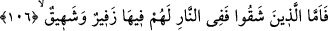
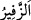
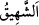
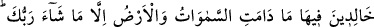
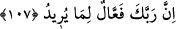

106. Bedbaht olanlar ateştedirler. Orada onların (öyle feci) bir soluk alıp verişleri
vardır ki!
“Şakîler” yani şaki olacakları belli olmuş ve cehennemlik olmalarına hükmedilenler
“ateştedirler” yani cehennemde kalacaklardır.
Sanki bir kimse “Onların orada durumu nasıl olacak?” diye sormuş ve şöyle cevap
verilmiştir: “Onların orada bir soluk alışverişleri vardır ki!..”
“__WORD__” nefesi güçlükle ve sıkıntılı bir şekilde vermek; “__WORD__ ise aynı tarzda nefes
almak demektir. Bu iki kelime esâsen eşeklerin ilk anırma anları ile anırmalarını
bitirirken çıkardıkları sesi anlatmakta kullanılır. Buna göre âyette bir istiâre-i tasrîhiyye
vardır. Çünkü maksad şakîlerin bağırmalarını eşek anırmasına benzetmektir. Nasıl ki
eşeklerin çirkin bir sesi varsa, bunların da cehennemde çirkin sesleri olacaktır. Nitekim
bu durum dünyada bile özellikle asılma, boğulma, başının vurulması ve elinin kesilmesi
gibi belâlara mâruz kalanlarda görülmektedir. Bu esnada bazı suçluların sığır böğürtüsü
gibi böğürüp, beti benzi atar ve sesi değişir. Âhiret hâlleri ise dünya hâllerine göre bin
kat daha sıkıntılıdır.
107. Rabb’inin dilediği hariç (onlar) gökler ve yer durdukça o ateşte ebedî
kalacaklardır. Çünkü Rabb’in istediğini hakkıyla yapandır.
“Rabb’inin dilediği hariç” Bu ifade cehennemde sürekli kalışın istisnâsını
belirtmektedir. Çünkü, muvahhidlerin fâsıklarından oluşan bazı cehennemlikler, ateşten
çıkacaklardır. Bir hükmün bir şeyin bütünü için geçersiz hâle gelmesi, bir kısmı için de
geçersiz olması demektir.
Bir şahısta iki açıdan hem şakîliğin, hem de saîdliğin bir arada bulunması câizdir.
Nitekim et-Te’vîlâtü’n-Necmiyye’de şöyle denilir:
“Rabbinin” şakîlerden “dilediği hariç.” ifâdesi, şöyle açıklanabilir: Ehl-i şakavet
iki kısımdır. Şakîler ve daha şakîler. Buna göre tevhid ehlinden bazıları işlediği
mâsiyetler yüzünden şakî olurken, tevhidleri sayesinde saîd olmaktadır. Mâsiyetler
onları ateşe sokarken, tevhid onları oradan çıkarmaktadır. İnkâr ve bid’at ehlinden
bazıları da vardır ki bunlar daha şakîdirler. İnkâr ve yalanlamaları bunları ateşe sokar
ve burada sürekli ve ebedî olarak kalırlar.”
İbn Mes’ûd (r.a.)’ın şöyle dediği rivâyet edilir: “Cehennem için öyle bir zaman